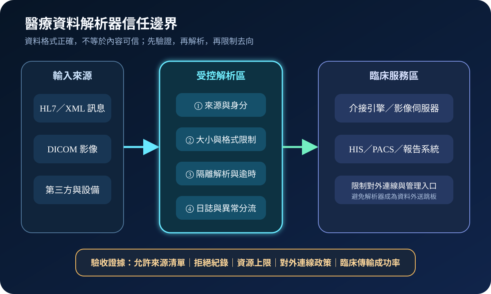
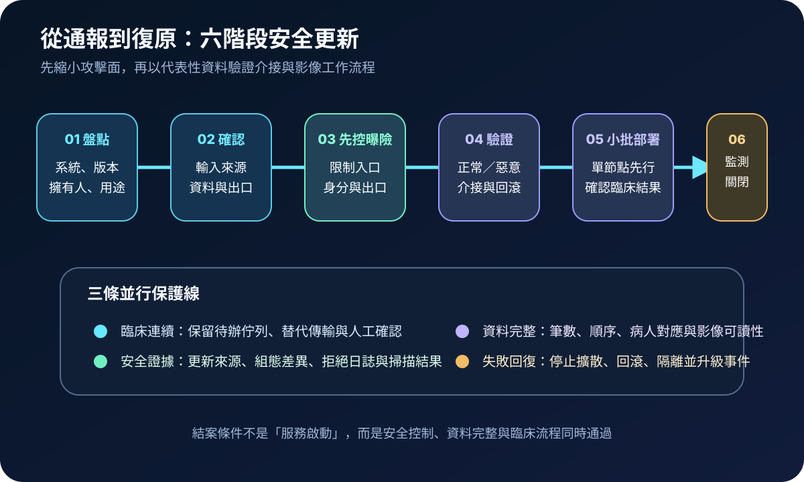
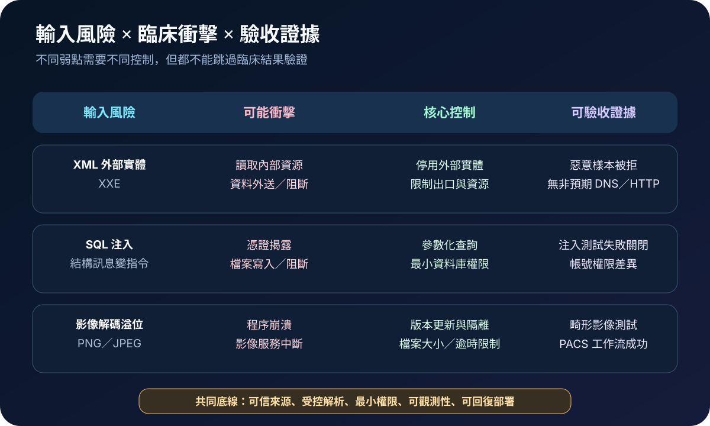

醫療資安國際觀察 · 2026-09-12
醫療資料介接如何擋住惡意輸入：從 HL7／DICOM 解析器到隔離驗收
作者：Dr. William｜醫療資訊與資安治理實務工作者
介接引擎與影像伺服器位於醫療資料流的樞紐，必須解析來自設備、院外機構與第三方的結構化內容。格式可讀並不代表內容可信；安全設計要在解析前限制來源與資源，在解析後限制權限與資料去向。
名詞解釋：解析器與信任邊界
解析器（parser）把 HL7、XML、DICOM、PNG 或 JPEG 等內容轉成系統可處理的欄位、物件與影像。輸入驗證檢查長度、格式、數值範圍與允許值；信任邊界則決定資料跨區前必須通過哪些身分、網路、資源與日誌控制。兩者需搭配，避免資料內容被解讀成指令或使服務耗盡。
國際現況與適用邊界
美國 CISA 於 2026 年 9 月 10 日發布兩份醫療通報。Mirth Connect 4.7.1 以前版本涉及 SQL 注入與 XML 外部實體（XXE）弱點，可能造成連接系統憑證揭露、檔案寫入、資料外洩或阻斷服務，通報建議更新至 4.7.2 以上。Orthanc DICOM Server 1.13.0 以前版本則可能因特製 PNG／JPEG 觸發整數溢位與越界寫入，使程序崩潰或服務中斷，通報建議更新至 1.13.0。
法域與效力：上述內容是美國 CISA 對全球部署產品發布的醫療資安通報，不是台灣醫院的法定期限。通報發布時，CISA 表示尚未收到專門利用這些弱點的公開攻擊報告；這不等於風險不存在。台灣機構應依實際版本、曝險、臨床關鍵性、製造商資訊與本地規範決定處置順序。
規劃：先找出所有會「讀資料」的節點
範圍應涵蓋介接引擎、PACS／VNA、DICOM 路由、報告轉換、批次匯入及第三方資料交換。系統擁有人確認版本與臨床用途；介接團隊盤點輸入格式、來源及目的地；資安團隊檢查管理面、服務帳號、對外連線與日誌；臨床單位定義停機替代路徑。驗收指標可包含版本覆蓋率、未知來源拒絕率、解析異常告警時間、對外連線例外數、資料筆數一致率及代表性臨床流程成功率。

實作：把更新與解析隔離一起完成
- 盤點：列出產品、元件、版本、外掛、節點、擁有人及資料用途，辨識同一服務的測試與備援實例。
- 縮小曝險：關閉非必要公開入口，以防火牆允許已知來源；管理面使用獨立身分與多因素驗證。
- 限制解析：設定訊息與檔案大小、逾時、併發及佇列上限；停用不需要的外部實體、轉換與腳本能力。
- 降低權限：資料庫、檔案與服務帳號只保留必要權限，限制解析節點主動連向網際網路或內部敏感服務。
- 分批更新：在受控環境測試正常與畸形樣本，再由單一節點先行；保留回滾點及待辦訊息。
- 驗收關閉：比對筆數、順序、病人身分、報告與影像可讀性，監測拒絕、崩潰、異常出口與重送。
風險：過濾不能取代修補，修補也不能取代臨床驗證
只靠網路隔離仍可能接收來自已授權設備的惡意或損壞內容；只更新版本則可能保留過大的服務權限與不必要出口。過度嚴格的格式規則也可能拒絕合法資料，造成延遲診斷或人工補登。控制需以真實但去識別化的代表性資料測試，並保留安全失敗、重新處理與例外到期機制。

可執行清單
- 是否能列出所有接收 HL7、XML、DICOM 與影像檔的服務及版本？
- 輸入來源、管理入口與解析節點的對外連線是否採允許清單？
- 服務帳號是否無法任意讀取憑證、寫入檔案或查詢非必要資料？
- 是否已設定大小、逾時、併發、佇列及失敗重送上限？
- 更新測試是否包含畸形輸入、回滾及備援切換？
- 結案是否證明版本、控制、資料完整與臨床工作流程同時通過？
來源
- CISA｜NextGen Healthcare Mirth Connect（ICSMA-26-253-01）（發布：2026-09-10；查閱：2026-09-12）
- CISA｜Orthanc DICOM Server（ICSMA-26-253-02）（發布：2026-09-10；查閱：2026-09-12）
- NIST｜SP 800-53 Rev. 5：Security and Privacy Controls for Information Systems and Organizations（發布：2020-09；更新：2020-12-10；查閱：2026-09-12）
內容說明
本文依健康台灣深耕計畫相關治理內容整理，並參考 CISA 醫療通報與 NIST 公開控制，提出台灣醫療機構可採用的解析器信任邊界、分批更新與臨床驗收方法；不取代主管機關公告、法律意見、產品文件或個案風險評估。